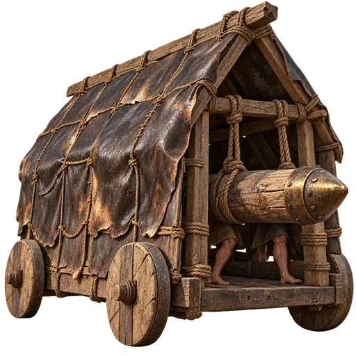
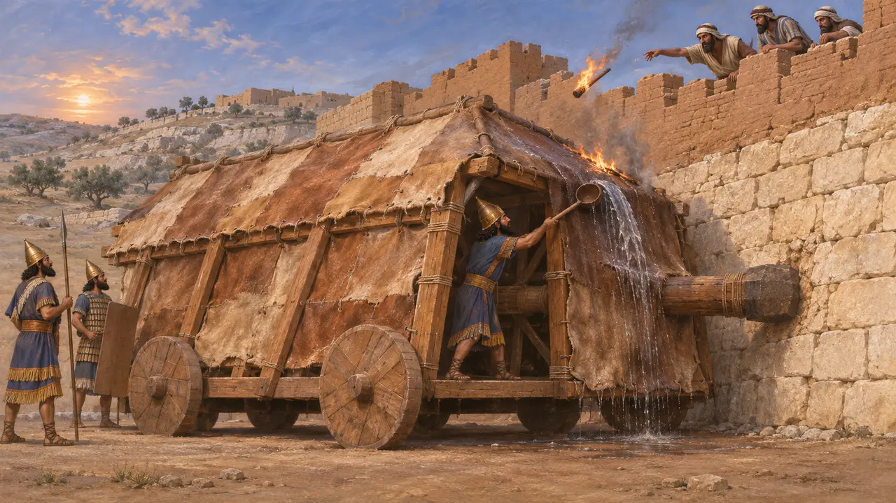
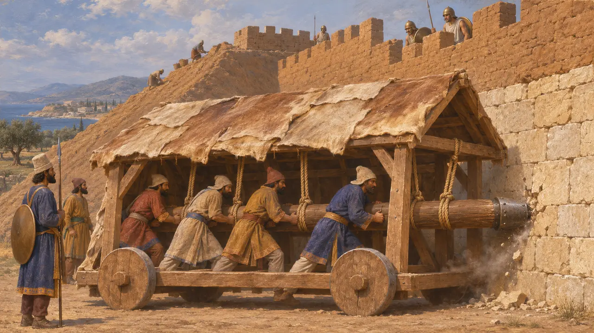
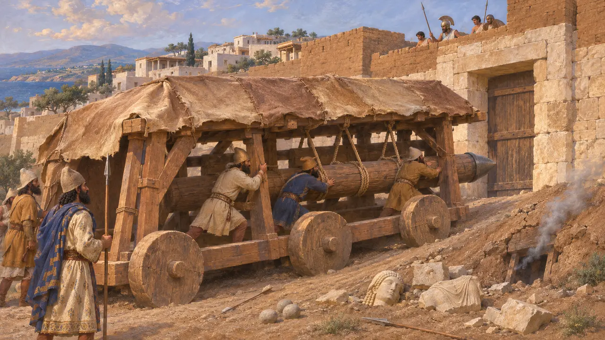
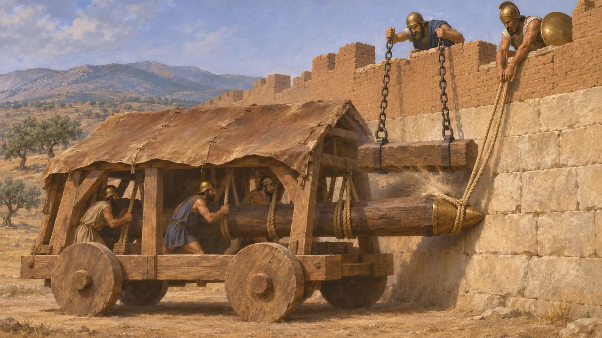
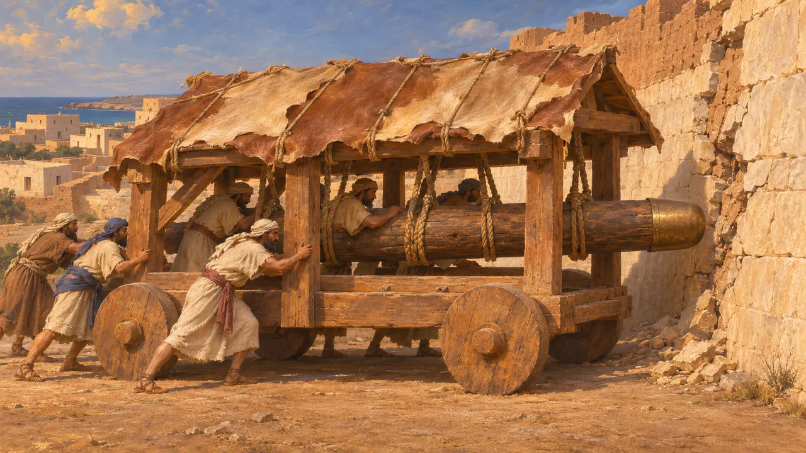

Энциклопедия › Воины и корабли

Крытый таран
Крытый стенобитный таран для пролома стен, применявшийся на Ближнем Востоке задолго до 530 г. до н. э.
Крытый таран представлял собой тяжёлое бревно, обычно окованное металлом, которым расчёт бил в стену или ворота, укрываясь под крытым деревянным навесом, защищавшим от метательных снарядов и огня. Ко времени Кира это орудие насчитывало уже несколько веков, о чём свидетельствуют рельефы ассирийских дворцов. В эту эпоху персидские войска брали города главным образом насыпями, подкопами и блокадой, а Геродот почти ничего не говорит о таранах в их осадах.
В игре: В игре у врагов Царя есть медленный таран, обтянутый шкурами: стрелы почти не причиняют ему вреда, а копейщики и всадники его разбивают. Это упрощение: мокрые шкуры защищали прежде всего от огня, а противники Персии в те годы редко применяли тараны.

Тараны до персов
Свидетельства эпохиНа ассирийских дворцовых рельефах колёсные тараны под высокими крытыми навесами атакуют стены; полнее всего это показано на рельефах Синаххериба об осаде Лахиша в 701 году до н. э. В одной сцене воин из расчёта поливает лобовую часть машины водой из длинного черпака, а защитники бросают на неё факелы. Сцена наводит на мысль, что расчёты остерегались прежде всего огня, а не стрел.
D. Ussishkin, The Conquest of Lachish by Sennacherib, 1982

Как персы брали города
Античное свидетельствоГеродот пишет, что Гарпаг в 540 г. до н. э.-х годах до н. э. взял ионийские города, возводя земляные насыпи у их стен. У Барки в Ливии персы рыли подкопы (их обнаружил медник, прислушиваясь к медному щиту), а в конце концов взяли город хитростью. Ещё Геродот сообщает, что Солы на Кипре пали, когда под их стену подвели подкоп, а Милет в 494 году до н. э. пал от подкопов и всевозможных машин.
Herodotus 1.162; 4.200-201; 5.115; 6.18

Осадная насыпь в Пафосе
Свидетельства эпохиАрхеологи в Старом Пафосе на Кипре нашли персидскую осадную насыпь, возведённую у северо-восточных ворот во время Кипрского восстания около 498-497 гг. до н. э. Её отчасти засыпали обломками статуй и строительным камнем. Защитники прорыли под ней подкопы и разводили огонь, чтобы её обрушить; на месте нашли сотни каменных ядер, наконечников стрел и копий. Геродот эту осаду не описывает — она известна только по раскопкам.
F. G. Maier and V. Karageorghis, Paphos: History and Archaeology, 1984

Греки и таран
Античное свидетельствоФукидид описывает пелопоннесские тараны, подведённые к Платеям в 429 году до н. э., через пятьдесят лет после событий, которыми завершается игра. Защитники ловили головы таранов петлями и обламывали их, сбрасывая тяжёлые брёвна, подвешенные на цепях. Геродот сообщает, что в 479 году до н. э. спартанцы не могли ворваться в персидский укреплённый лагерь при Платеях, пока не подошли афиняне, и что афиняне взяли Сест осадой, когда его защитники стали голодать.
Thucydides 2.76; Herodotus 9.70; 9.114-118

Предания о первом таране
Позднейшая легендаПозднейшие авторы рассказывали разные истории о том, кто изобрёл таран. Римский архитектор Витрувий, писавший более чем через четыре столетия после этой эпохи, утверждает, что первыми его применили карфагеняне при осаде Гадеса. Он добавляет, что позднее карфагенянин по имени Кетрас поставил таран на колёса под крышу, обтянутую шкурами. Это поздние предания о происхождении, а ассирийские рельефы показывают крытые тараны в деле задолго до того.
Vitruvius, On Architecture 10.13
Источники
- Herodotus, Histories 1.162, 4.200-201, 5.115, 6.18, 9.70, 9.114-118
- Thucydides 2.76
- F. G. Maier and V. Karageorghis, Paphos: History and Archaeology, 1984
- D. Ussishkin, The Conquest of Lachish by Sennacherib, 1982
- Vitruvius, On Architecture 10.13